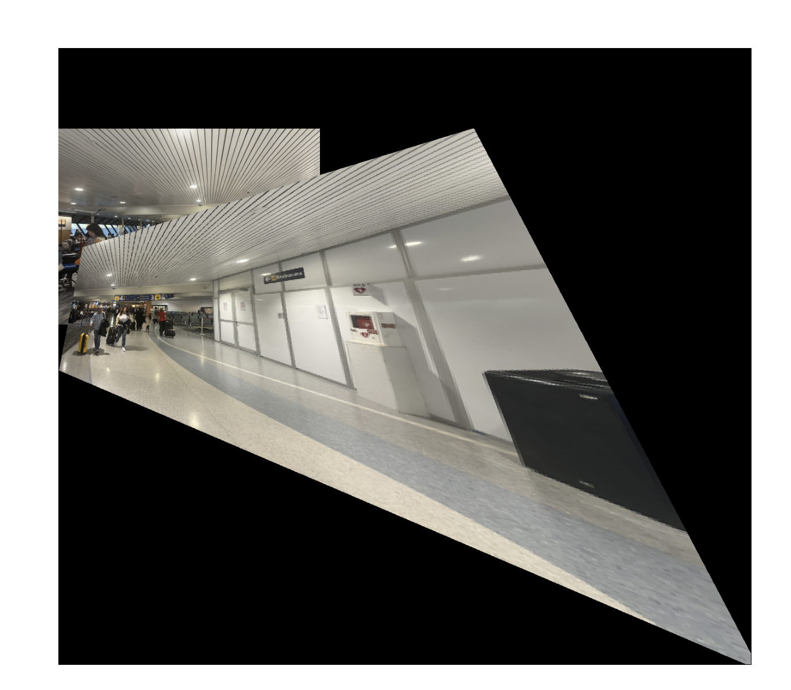
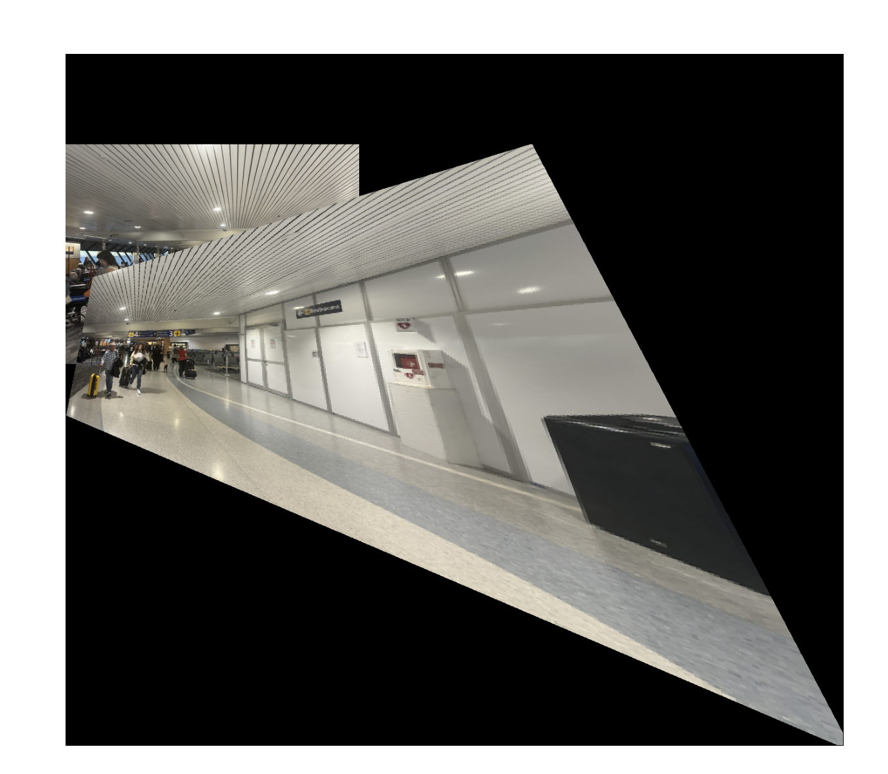
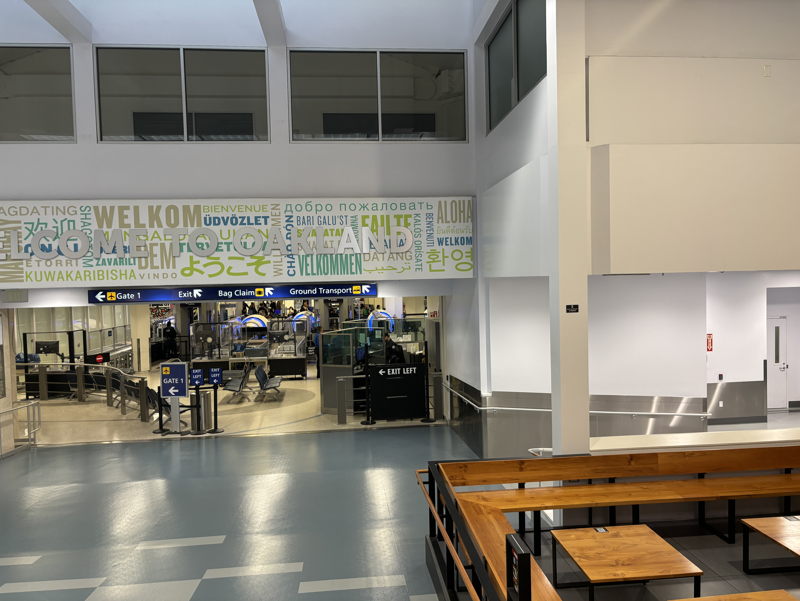
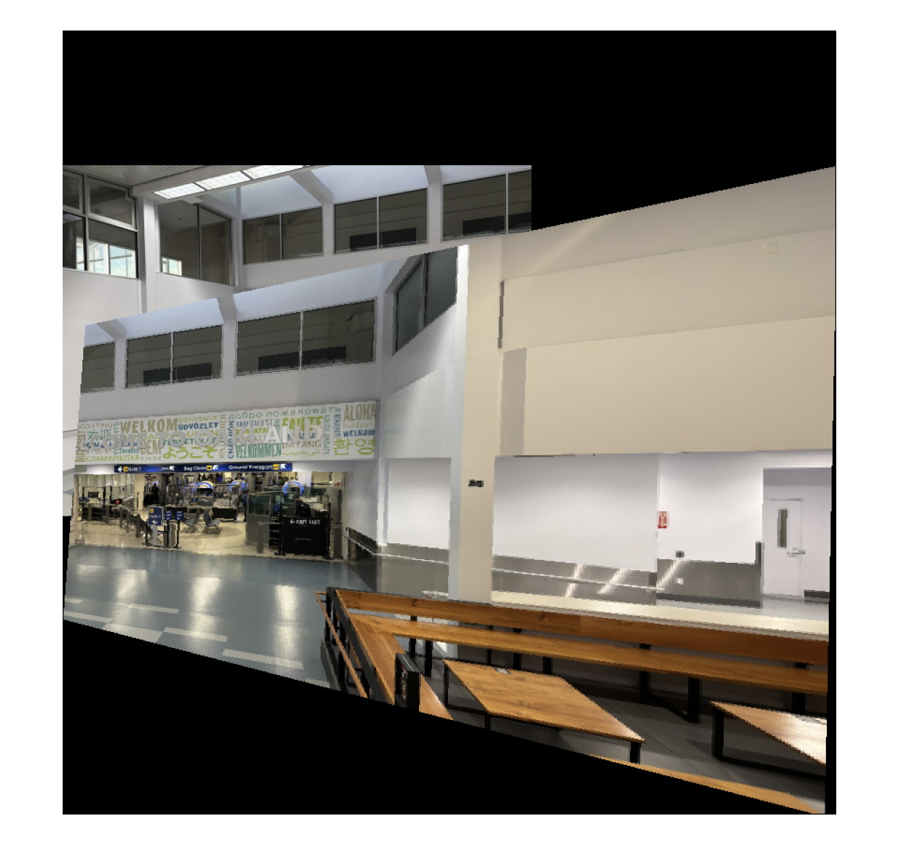
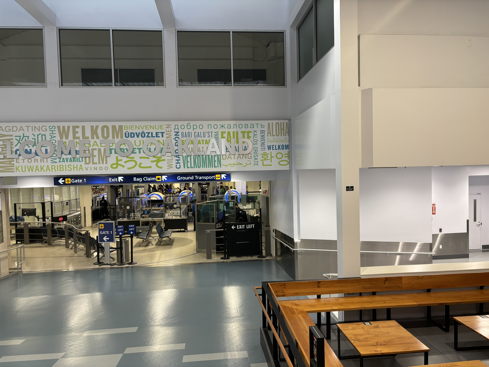
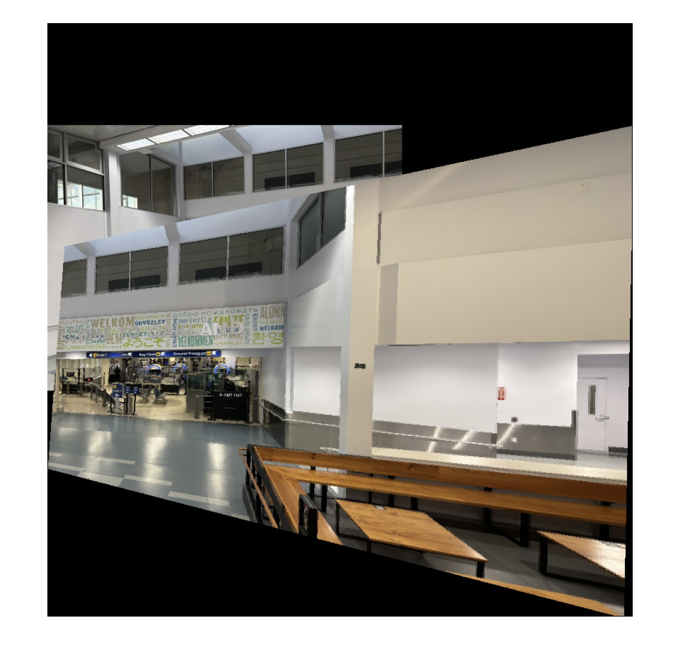

Graffiti Rectified


To achieve image rectification, I selected four corner points of a planar object in the input image. These points correspond to the corners of the object that I wanted to rectify. I used the computeH function, which implements the normalized Direct Linear Transformation (DLT) algorithm. The DLT algorithm calculates the homography matrix H that maps the selected points in the input image to the corners of a rectangle in the desired output image.
Using the computed homography matrix H, I employed the warpImage function to warp the input image. The warping involves inverse mapping from the output image coordinates to the input image coordinates, followed by interpolation to obtain pixel values. The result is an image where the planar object appears fronto-parallel, effectively rectifying it.
To create the image mosaic, I loaded two overlapping images that I wanted to stitch together to form a mosaic. I interactively selected 4 corresponding points in both images using the click_points function.
Using the selected correspondences, I computed the homography matrix H_32 that maps points from the right image (im3) to the left image's coordinate system (im2) using the computeH function.
I generated binary masks (mask2 and mask3) for the warped images to identify valid pixel regions. An overlap mask was created to identify overlapping regions between the two images.
A Gaussian blur was applied to the blending mask to ensure smooth transitions between the images. I applied the pyramid_blending function to blend the two images using Laplacian Pyramid blending.

 

 



For automatic image mosaicing, I implemented a Harris corner detector that computes corner responses using image gradients and Gaussian filtering. The detector identifies potential feature points by thresholding the corner response values.
I then applied Adaptive Non-Maximal Suppression (ANMS) to select 500 well-distributed corner points across each image based on both feature strength and spatial distribution.
For each selected corner point, I extracted feature descriptors by sampling 8x8 patches from 40x40 windows around each point. I normalized the patchs by subtracting the mean and dividing by the standard deviation to improve robustness.
I matched features between images using a nearest-neighbor approach with Lowe's ratio test (threshold of 0.7) to filter out ambiguous matches. The final homography was computed using RANSAC with a distance threshold of 5.0 pixels and up to 1000 iterations, ensuring that the transformation estimation is sufficiently robust despite potential mismatches.
I then used the same blending technique used from the manual approach and applied it to create the final mosaic.
Through this project, what I found most interesting was the inherently probabilistic nature of computer vision algorithms. Even with identical input images, the resulting mosaics varied significantly between runs due to several sources of variability.
When I selected points manually, the precise order and location of corresponding points influenced how the homography matrix was calculated, as each point pair contributes differently to our system of equations. This shows how small variations in point selection can lead to noticeably different transformation matrices.
The automatic feature matching algorithm further demonstrated the probabilistic elements of this project. The RANSAC algorithm's random sampling of point correspondences implies that each run will produce different homography estimates. Overall, this makes image mosaicing more of a "best estimate" process rather than a deterministic one.